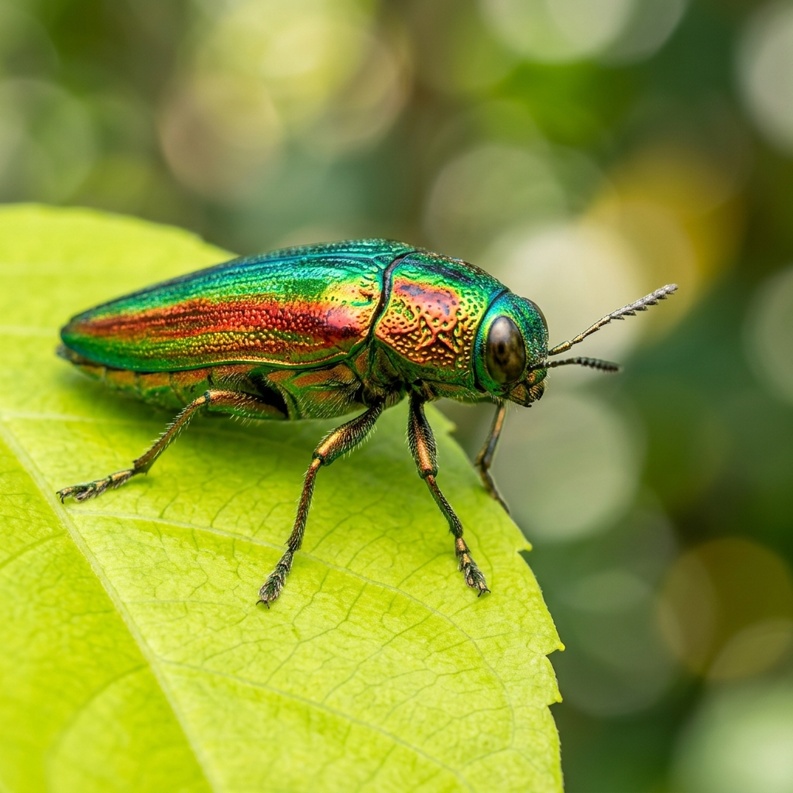
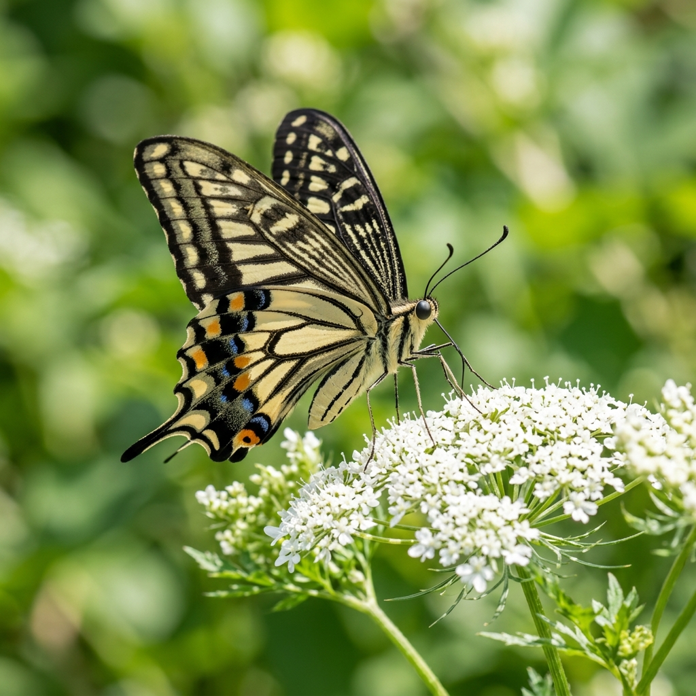
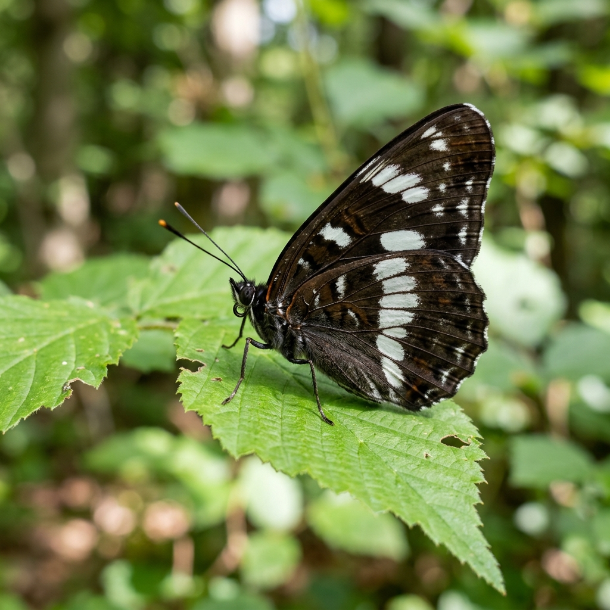
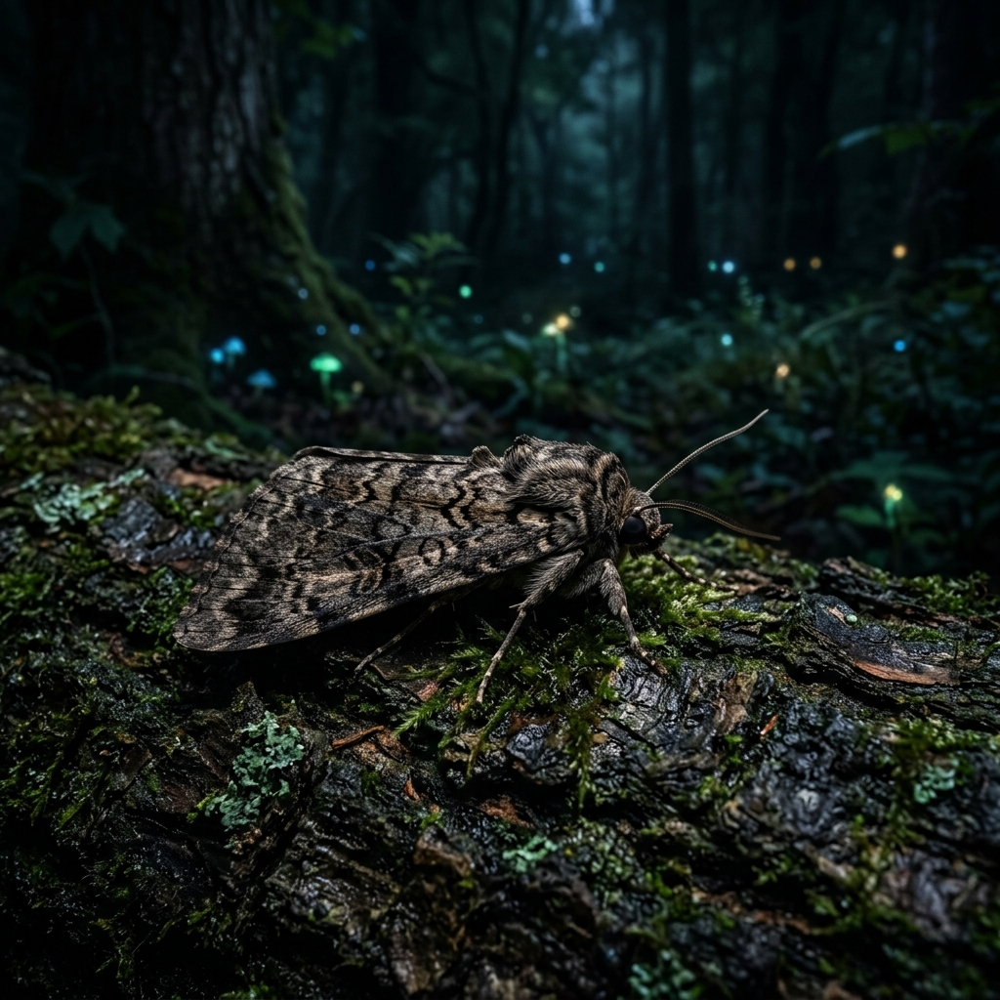

COLLECTION
호랑나비
Papilio xuthus
한국 곤충도감
오늘은 어떤 곤충을 만나볼까요?
Papilio xuthus
여름 곤충소리
미국흰불나방
Hyphantria cunea
잠자리
Sympetrum darwinianum
왕귀뚜라미
Teleogryllus emma
Light that bends across the shell
길앞잡이
Cicindela chinensis
풍뎅이
Protaetia brevitarsis
무당벌레
Harmonia axyridis
First flights of the year
호랑나비
Papilio xuthus
애기세줄나비
Neptis sappho
배추흰나비
Pieris rapae
Beneath the leaf litter
사슴벌레
Lucanus maculifemoratus
무당벌레
Harmonia axyridis
장수풍뎅이
Allomyrina dichotoma
표시할 대표 종 데이터가 없습니다
이름 미상
Scientific name
몸길이
활동·관찰 시기
형태 특징
생태
서식지
서식지 정보는 데이터 연결 후 표시됩니다.
분류 계층
학명
-
기타 정보
ENTOMA · KR
한글명 · 학명 · 통명 · 목/과로 곤충 탐색
결과
일치하는 곤충이 없습니다
학명·한글명·통명 또는 분류명(목/과)으로 다시 시도해 보세요.
관심 있는 곤충들이 여기에 저장됩니다.
저장된 곤충이 없습니다
도감에서 마음에 드는 곤충을 발견하면 하트를 눌러보세요.
@yujin.entoma · Seoul, KR
Achievements from the field
Species you've fallen for

Chrysochroa fulgidissima

Papilio xuthus
Your latest encounters

Limenitis camilla

Catocala nupta
Rosalia lameerei